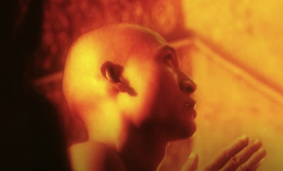

Het hele verhaal
Er waren eens twee broers, zonen van een veerman. Als kind al voeren zij met hun vader heen en weer over de rivier, wanneer hij voorbijgangers overzette. De betaling was maar karig: één dubbeltje per persoon. Het werk was eentonig en weinig geestverheffend: dus besloot de oudste om meer diepgang aan zijn leven te gaan geven. Hij verliet het huisje aan de rivier, zijn ouders en broer en het veerbootje en trad in, in een boeddhistisch monnikenklooster. Na vele jaren van meditatie en zoeken naar het hogere en naar de verborgen krachten in de menselijke geest, gebeurde het dat hij op reis moest naar een ander klooster en onderweg het ouderlijk huis passeerde. Hij klopte aan en na veel hartelijke omhelzingen en vreugdetranen vertelde men elkaar hoe ieders leven tot nu toe verlopen was. Na enige tijd nam de monnik weer afscheid en na alle goede wensen over en weer liepen beide broers naar het veerbootje, de een om over te zetten, de ander om overgezet te worden. De broer-veerman vroeg aan de broer-monnik: "Wat heb je nu eigenlijk in de afgelopen zeven jaar in dat klooster geleerd?" "Ik zal het je laten zien," zei de monnik, en hij daalde af naar de oever van de rivier; over het water liep hij naar de overkant, zwaaide daar nog eenmaal vaarwel en verdween tussen de bomen.
